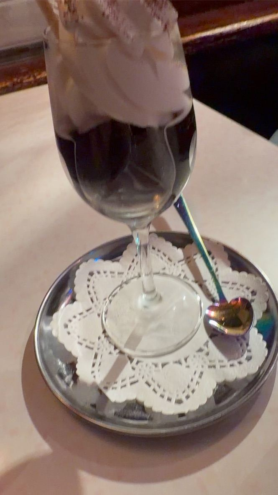
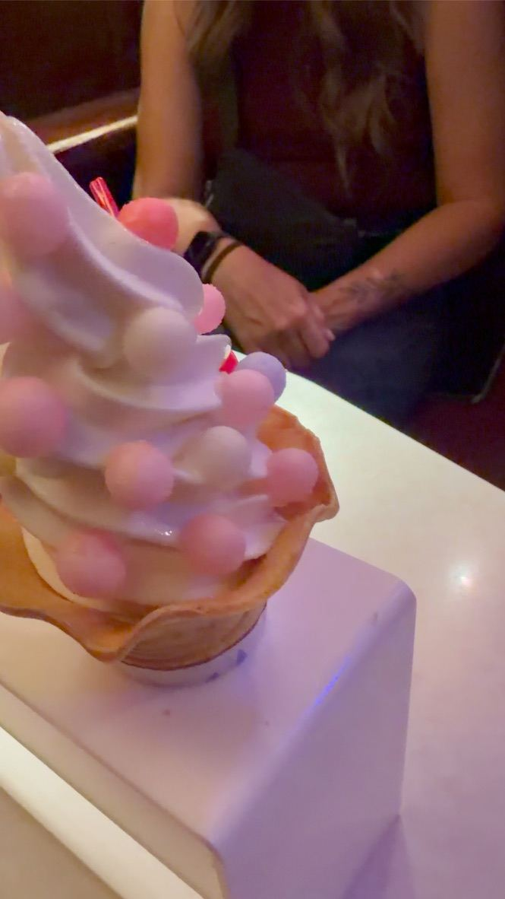
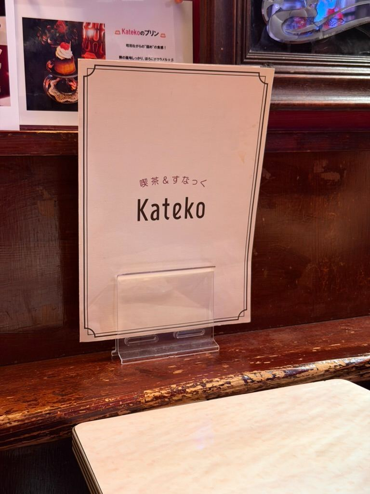
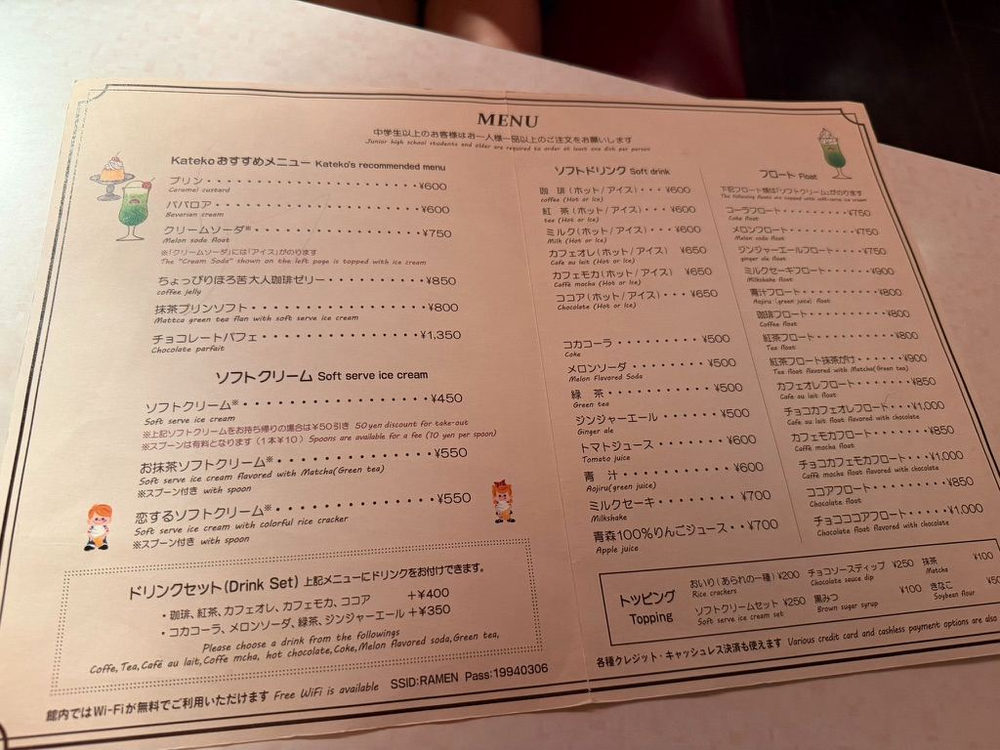

Retro Sweet Treats at Cafe Kateko! 🍨✨




Watch on YouTube →
# Retro Sweet Treats at Cafe Kateko! 🍨✨
When you're exploring the nostalgic Showa-era alleys inside the Shin-Yokohama Ramen Museum, saving room for dessert is non-negotiable. Tucked right into the retro streetscape is **喫茶＆すなっく Kateko** (Cafe & Snack Kateko), a classic Japanese *kissaten* style cafe serving up vintage sweets and refreshing floats.
---
**Retro Sweets We Tried**
* **Coffee Jelly Sundae:** Rich, slightly bitter coffee jelly topped with creamy soft-serve ice cream, cocoa powder, and a classic wafer cookie served in a stemmed glass.
* **Matcha Soft Serve:** Deep green, rich matcha soft-serve ice cream packed with authentic green tea flavor.
* **Koi-suru Soft Serve:** A fun, pastel treat featuring soft-serve ice cream topped with colorful, crunchy *oiri* rice crackers.
---
**Why Stop by Kateko?**
Stepping into Kateko feels like dropping into a cozy neighborhood cafe straight out of 1958 Japan. Whether you need a cool treat after a warm bowl of ramen or just want to sit back and soak in the mid-century cafe ambiance, it's the perfect sweet finish to a retro museum trip.
What’s your go-to Japanese dessert—rich matcha or classic coffee jelly? Let us know in the comments!